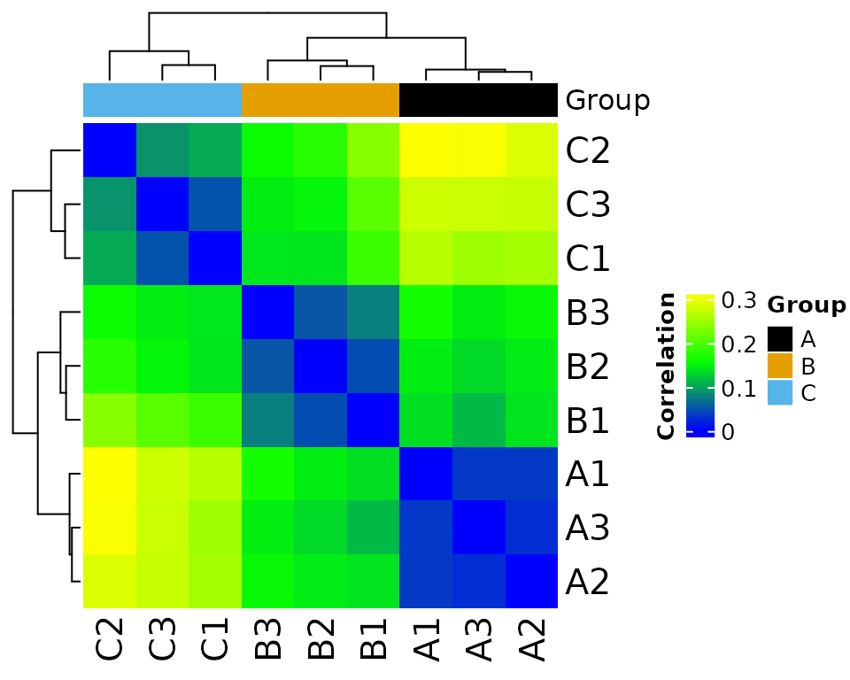
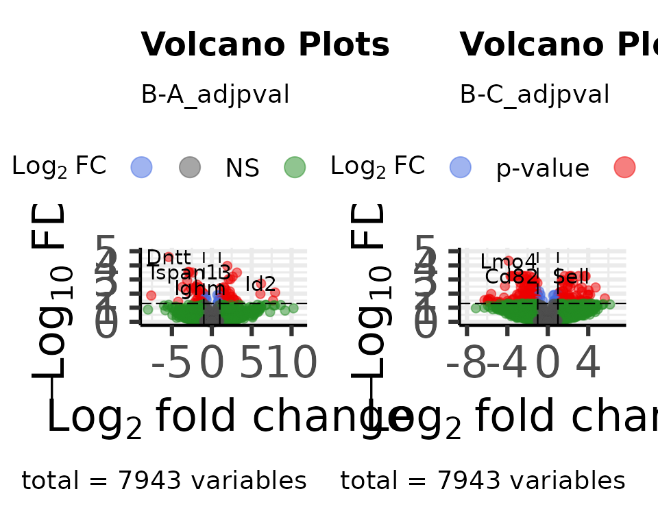

library(MOSuite)
#> Warning: replacing previous import 'S4Arrays::makeNindexFromArrayViewport' by
#> 'DelayedArray::makeNindexFromArrayViewport' when loading 'SummarizedExperiment'Default plots from each step
Default plots can be printed to the screen and/or saved to the disk.
# set options to print & save the plots
options(moo_print_plots = TRUE)
options(moo_save_plots = TRUE)
# when moo_save_plots is TRUE, plots are saved to this directory:
options(moo_plots_dir = "./figures")See ?MOSuite::options for more information.
clean
moo <- create_multiOmicDataSet_from_dataframes(
sample_metadata = as.data.frame(nidap_sample_metadata),
counts_dat = as.data.frame(nidap_raw_counts)
) %>%
clean_raw_counts()
#> Saving 5 x 4 in image
#> * cleaning raw counts
#>
#> Not able to identify multiple id's in GeneName
#>
#> Columns that can be used to aggregate gene information GeneName
#>
#> Aggregating the counts for the same ID in different chromosome locations.
#> Column used to Aggregate duplicate IDs: GeneName
#> Number of rows before Collapse: 43280
#>
#> no duplicated IDs in GeneNamefilter
moo <- moo %>%
filter_counts(group_colname = "Group")
#> * filtering clean counts
#> Number of features after filtering: 7943
#> colors_for_plots NULL
#> colors_for_plots character
#> Warning: ggrepel: 1 unlabeled data points (too many overlaps). Consider
#> increasing max.overlaps
#> Saving 5 x 4 in image
#> Warning: ggrepel: 1 unlabeled data points (too many overlaps). Consider
#> increasing max.overlaps#> Warning: ggrepel: 1 unlabeled data points (too many overlaps). Consider
#> increasing max.overlaps
#> Saving 5 x 4 in image
#> Warning: ggrepel: 1 unlabeled data points (too many overlaps). Consider
#> increasing max.overlaps
#> Saving 5 x 4 in imagenormalize
moo <- moo %>%
normalize_counts(group_colname = "Group")
#> * normalizing filt counts
#> Total number of features included: 7943
#> Warning: ggrepel: 1 unlabeled data points (too many overlaps). Consider
#> increasing max.overlaps
#> Saving 5 x 4 in image
#> Warning: ggrepel: 1 unlabeled data points (too many overlaps). Consider
#> increasing max.overlaps#> Warning: ggrepel: 3 unlabeled data points (too many overlaps). Consider
#> increasing max.overlaps
#> Saving 5 x 4 in image
#> Warning: ggrepel: 3 unlabeled data points (too many overlaps). Consider
#> increasing max.overlaps
#> Saving 5 x 4 in image
#> Sample columns: A1, Sample columns: A2, Sample columns: A3, Sample columns: B1, Sample columns: B2, Sample columns: B3, Sample columns: C1, Sample columns: C2, Sample columns: C3batch correct
moo <- moo %>%
batch_correct_counts(
covariates_colname = "Group",
batch_colname = "Batch",
label_colname = "Label"
)
#> * batch-correcting norm-voom counts
#> Found2batches
#> Adjusting for2covariate(s) or covariate level(s)
#> Standardizing Data across genes
#> Fitting L/S model and finding priors
#> Finding parametric adjustments
#> Adjusting the Data
#> Saving 5 x 4 in image
#> Saving 5 x 4 in image
#> Saving 5 x 4 in image
#> The total number of features in output: 7943
#> Number of samples after batch correction: 10differential expression
moo <- moo %>%
diff_counts(
count_type = "filt",
covariates_colnames = c("Group", "Batch"),
contrast_colname = c("Group"),
contrasts = c("B-A", "C-A", "B-C"),
input_in_log_counts = FALSE,
return_mean_and_sd = FALSE,
voom_normalization_method = "quantile",
)
#> * differential counts
#> Setting first column of `counts` as gene annotation.
#> Total number of genes included: 7943
#> `geom_smooth()` using method = 'gam' and formula = 'y ~ s(x, bs = "cs")'#> Saving 5 x 4 in image
#> `geom_smooth()` using method = 'gam' and formula = 'y ~ s(x, bs = "cs")'filter differential features
moo <- moo %>% filter_diff()
#> Joining with `by = join_by(GeneName)`
#> Joining with `by = join_by(GeneName)`
#> * filtering differential features
#> Total number of genes selected with adjpval < 0.05 and | logFC | ≥ 1 is
#> sum(selgenes)
#> Saving 5 x 4 in imageCustomize plots
TODO
- show how to use individual plotting functions
- how to customize & override default color palettes
- how to customize ggplot objects
Expression Heatmap
heatmap_plot <- plot_expr_heatmap(
moo,
count_type = "norm",
sub_count_type = "voom"
)
#> The total number of genes in heatmap: 500
print(heatmap_plot)
Volcano
Summary
dat_volcano_summary <- moo@analyses$diff %>%
join_dfs_wide() %>%
plot_volcano_summary()
#> Joining with `by = join_by(GeneName)`
#> Joining with `by = join_by(GeneName)`
#> Preparing table for contrast: B-A
#> Fold change column: B-A_logFC
#> pval column: B-A_pval
#> Total number of features included in volcano plot: 7943
#> Preparing table for contrast: C-A
#> Fold change column: C-A_logFC
#> pval column: C-A_pval
#> Total number of features included in volcano plot: 7943
#> Preparing table for contrast: B-C
#> Fold change column: B-C_logFC
#> pval column: B-C_pval
#> Total number of features included in volcano plot: 7943
#> Warning: ggrepel: 27 unlabeled data points (too many overlaps). Consider
#> increasing max.overlaps
#> Warning: ggrepel: 29 unlabeled data points (too many overlaps). Consider increasing max.overlaps
#> ggrepel: 29 unlabeled data points (too many overlaps). Consider increasing max.overlaps#> Saving 5 x 4 in image
#> Warning: ggrepel: 27 unlabeled data points (too many overlaps). Consider increasing max.overlaps
#> ggrepel: 29 unlabeled data points (too many overlaps). Consider increasing max.overlaps
#> ggrepel: 29 unlabeled data points (too many overlaps). Consider increasing max.overlaps
head(dat_volcano_summary)
#> GeneName Contrast FC logFC tstat pval
#> B-A.1 Dntt B-A -42.746586 -5.417737 -15.68797 3.159343e-09
#> B-A.2 Tmsb4x B-A 3.850020 1.944866 12.91026 2.760555e-08
#> B-A.3 Flt3 B-A -7.714394 -2.947553 -11.38084 1.093405e-07
#> B-A.4 Tspan13 B-A -7.038498 -2.815268 -11.03127 1.531110e-07
#> B-A.5 Tapt1 B-A -5.291816 -2.403763 -10.65847 2.214593e-07
#> B-A.6 Itgb7 B-A 8.873823 3.149556 10.56147 2.442070e-07
#> adjpval
#> B-A.1 2.509467e-05
#> B-A.2 1.096354e-04
#> B-A.3 2.894973e-04
#> B-A.4 3.040401e-04
#> B-A.5 3.232894e-04
#> B-A.6 3.232894e-04Enhanced
dat_volcano_enhanced <- moo@analyses$diff %>%
join_dfs_wide() %>%
plot_volcano_enhanced()
#> Joining with `by = join_by(GeneName)`
#> Joining with `by = join_by(GeneName)`
#> Genes in initial dataset: 7943
#> Max y: 4.60041859457819
#> Genes in initial dataset: 7943
#> Max y: 4.32577808863472
Venn Diagram
venn_dat <- dat_volcano_summary %>% plot_venn_diagram()
#> All intersections: 1:7,c(1, 2, 3, 4, 5, 6, 7),c(79, 119, 265, 493, 149, 271, 516),c("Yes", "Yes", "Yes", "Yes", "Yes", "Yes", "Yes")
#> Intersections returned: 1:7,c(1, 2, 3, 4, 5, 6, 7),c(79, 119, 265, 493, 149, 271, 516)
head(venn_dat)
#> Gene Intersection Id Size
#> 1 Dntt (B-A ∩ B-C ∩ C-A) 1 79
#> 2 Flt3 (B-A ∩ B-C ∩ C-A) 1 79
#> 3 Id2 (B-A ∩ B-C ∩ C-A) 1 79
#> 4 Eltd1 (B-A ∩ B-C ∩ C-A) 1 79
#> 5 Runx3 (B-A ∩ B-C ∩ C-A) 1 79
#> 6 Dusp6 (B-A ∩ B-C ∩ C-A) 1 79